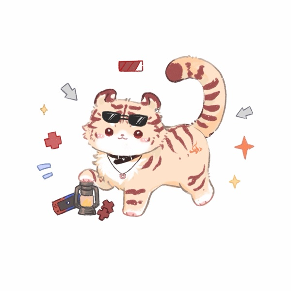
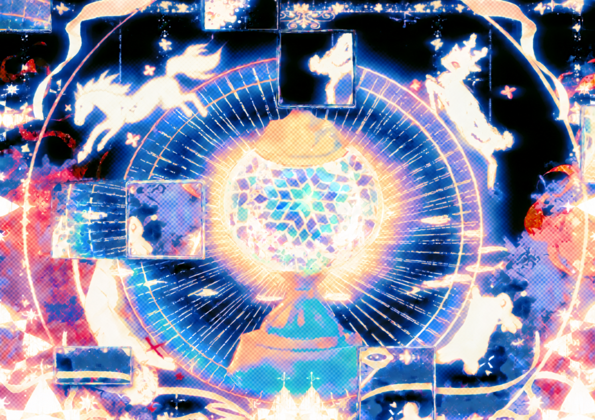
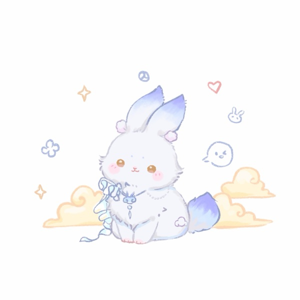
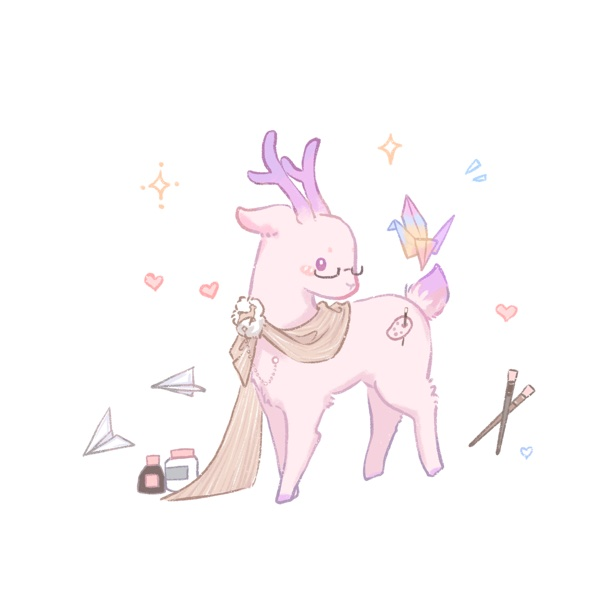
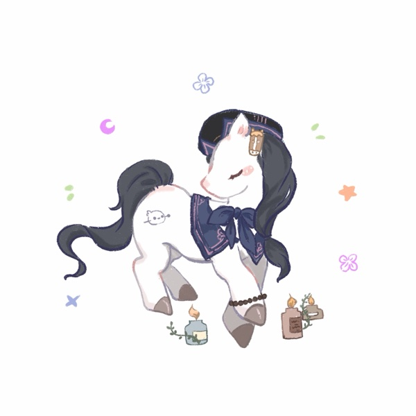

寅小虎灯
四只灯灵中的队长，负责可靠的虎老大。
- 闲暇
- 打游戏、垃圾食品
- 象征之灯
- 煤油灯

 第三盏灯回到灯前
第三盏灯回到灯前 传闻，人们死后，灵魂会在世间徘徊三日：第一日，遗忘死因；第二日，遗忘亲朋；第三日，遗忘自己。紧接着，它们便会随着清风，或飞进晚霞，或流进溪水，或沉入地底……
但总有一些特殊的魂灵，它们或执念难消，或材质特殊，迟迟不能融于世界，久久徘徊于天地间，这样的魂灵便会沉入世界之源。

据说，世界之源是一盏琉璃灯，与之交易能使死魂复生。当被吸引于此的纯白灵魂将交付自己的全部以点亮灯碗，绘着不同字纹的秘牌便会在灯碗中显现，获得代号的灵魂们便被称为执行者。
以姓名与记忆为抵押，
换取一次重返人间的机会。
三千世界中有一些特殊的灵魂，死后会沉入世界之源，拥有一次成为执行者的机会。执行者们向琉璃灯交付姓名与记忆作为抵押，在灯灵的组织协助下维护修复小世界以换取功德，攒满功德后便可复活。
在琉璃灯的烟云中氤氲而生，随后成长、独立演化成一个真正的、独立的世界。但初生的小世界十分脆弱，需要漫长的成长以形成自己的基石和秩序，在成长过程中很容易出现各种问题而破灭，这种时候便往往需要灯灵和执行者们的修复和维护。
灯灵是琉璃灯制造出的精灵，担任保养琉璃灯、监测小世界成长、管理协助执行者等等的职责。灯灵们原是无意识灵体，在漫长的工作过程中逐渐凝聚出了自我意识，它们会选择自己偏好的形象出现在执行者面前。当它们通过工作攒够功德后，便可以退休成为人类入世。
由于灯灵的力量与琉璃灯同源，贸然进入小世界只会使小世界扭曲、破坏它们的成长。所以在大多数情况下，灯灵除了一些联络通知和咨询建议外，无法给执行者们提供更多实质性帮助。
走近一位灯灵，认识它的另一面。移入或轻触画像
四只灯灵中的队长，负责可靠的虎老大。

喜欢偷懒的腹黑坏兔子，选择的人形没有性别。

外冷内热，努力让自己显得严肃的小驯鹿。

一款随和的小马，心情不好时爱敲木鱼。

档案筹备中